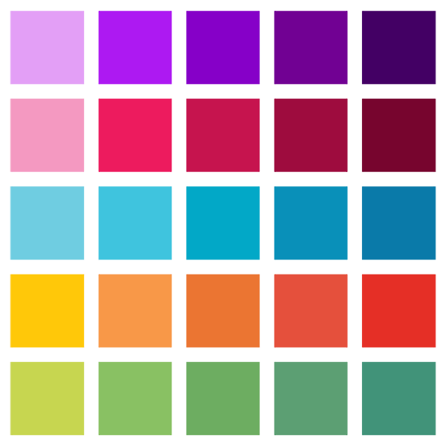
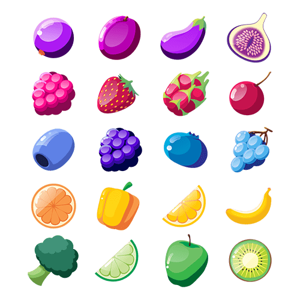
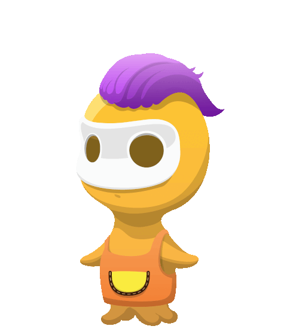
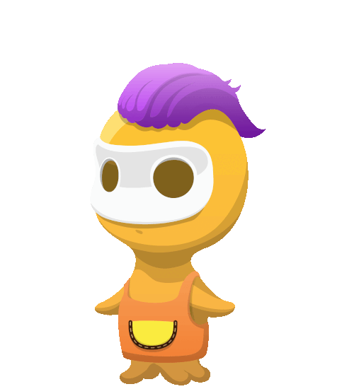
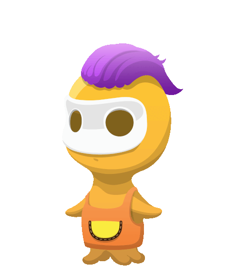

Mattemonster
Edimia • Game Design • UI • Assets • 2017–2018
In 2017, I worked on the mobile app Mattemonster / Math Monsters — an interactive math learning game for kids. The gameplay was grounded in the pedagogical methods of the Swedish curriculum (LGR11). Players solve arithmetic puzzles to feed their monsters with fruits and vegetables, progressing by earning trophies and coins.
Game Design
I opted for a retro-futuristic visual style, featuring flexible tubing and letter-marquee displays, with a varied color palette to represent different categories and levels. The monsters themselves were inspired by manga and Japanese mythology, giving the game a playful yet distinctive personality.
Game Assets


 

